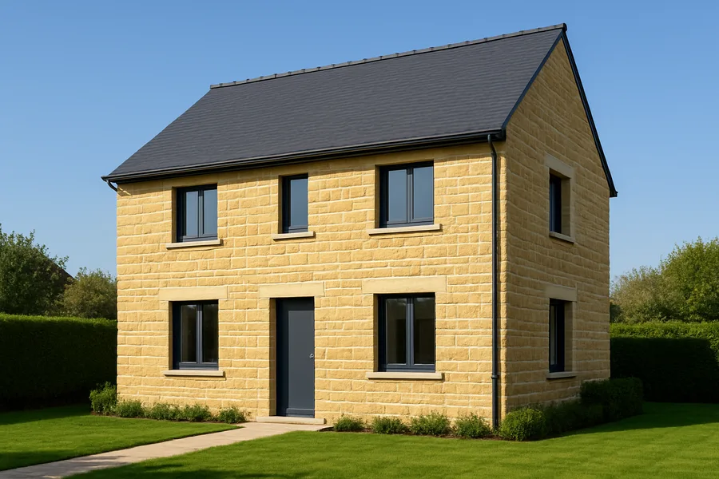
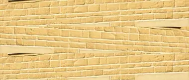
Sillería
Bloques regulares y juntas finas. El acabado más elegante y señorial, ideal para chalets y viviendas de nueva construcción.
Revestimiento imitación piedra tallado a mano por nuestros oficiales. Toda la nobleza de la sillería o la mampostería, sobre su muro actual y por una fracción del precio de la piedra.
Presupuesto gratuito y sin compromiso · respuesta en menos de 24 h
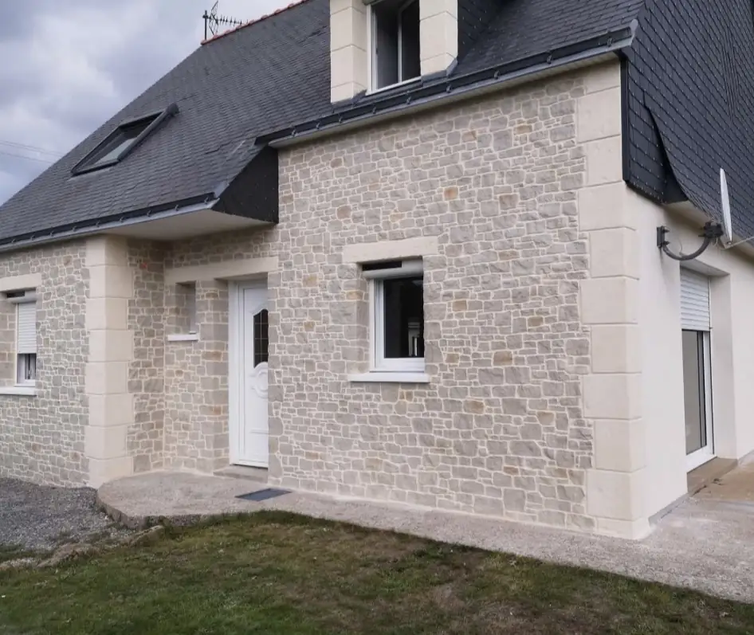
Deslice el cursor para comparar. Mismo muro, misma vivienda: solo cambia el revestimiento.
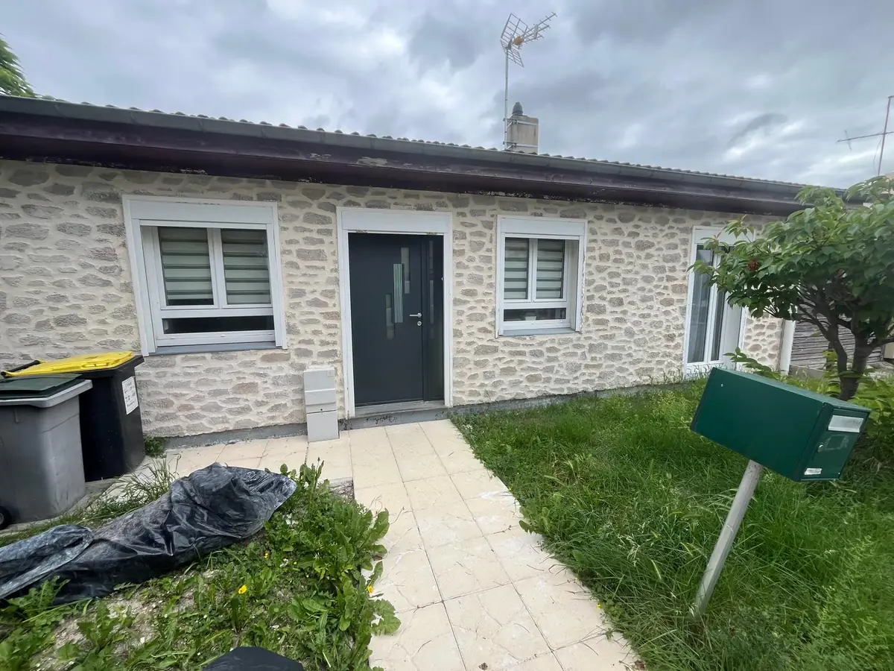
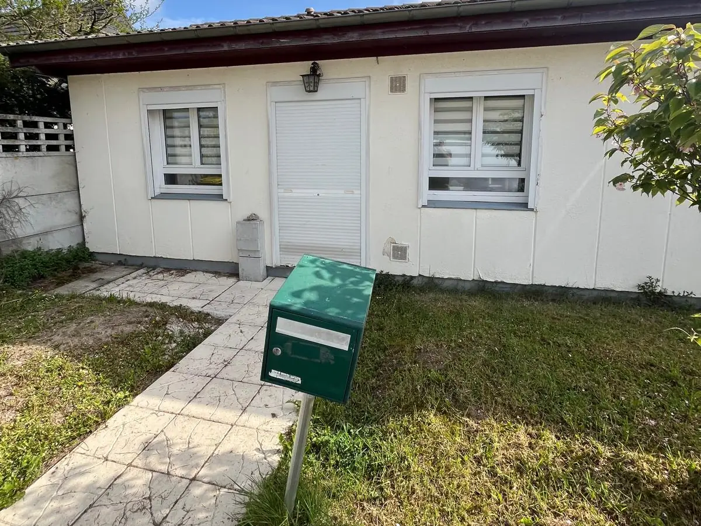
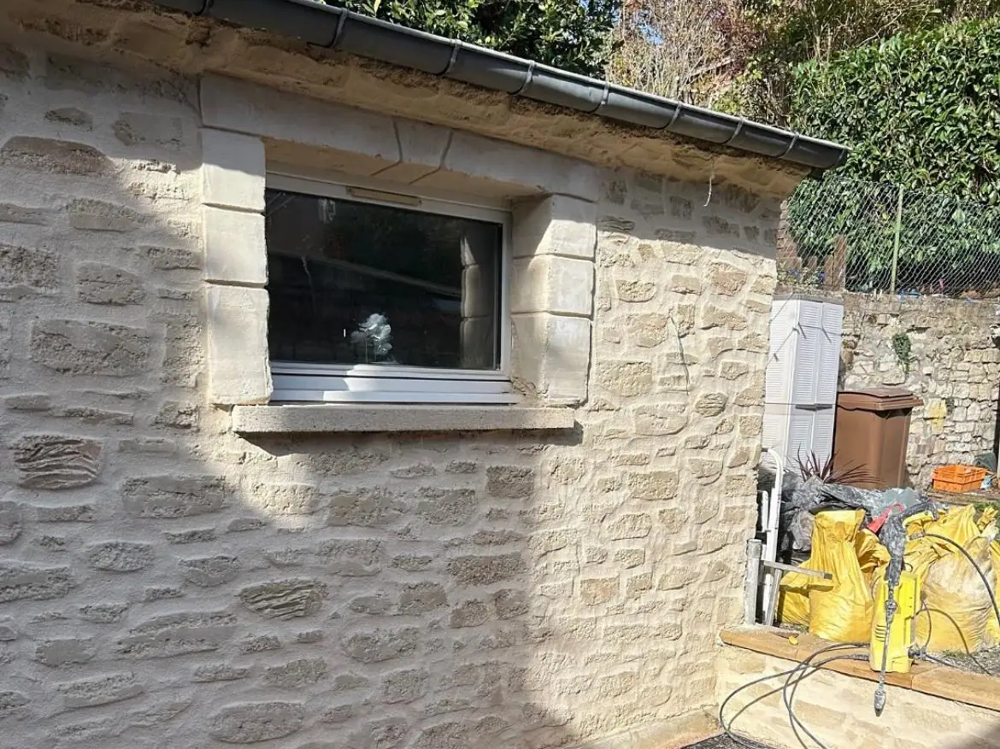
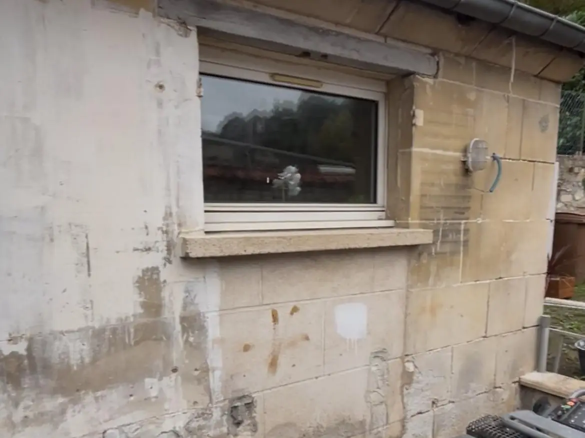
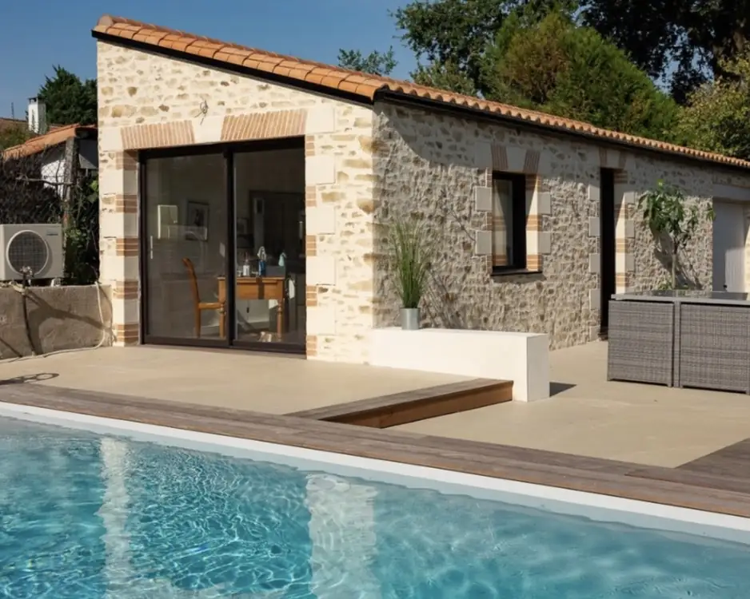
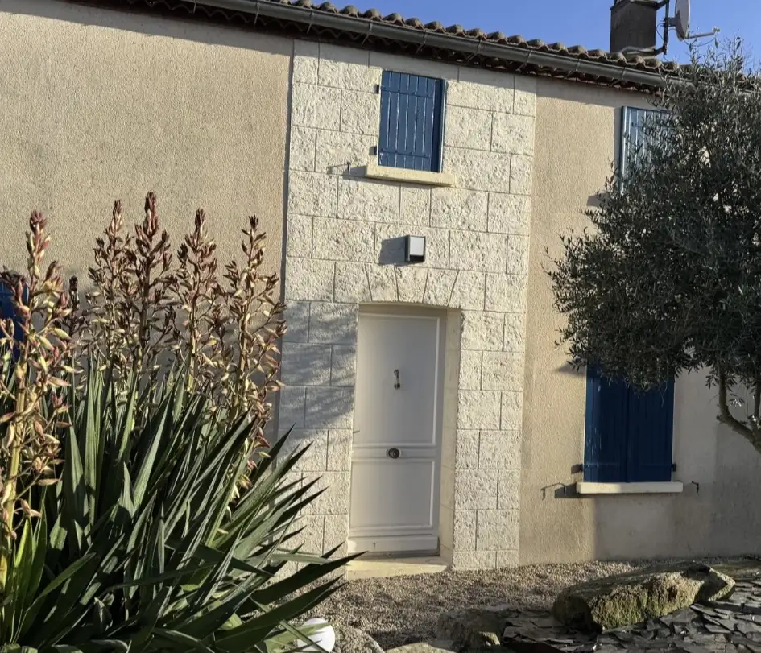
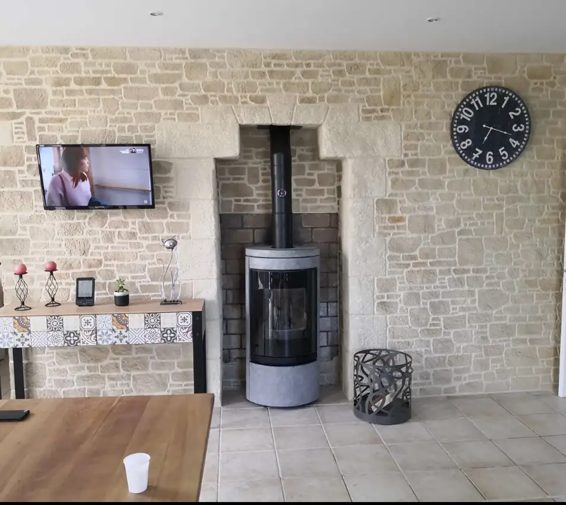
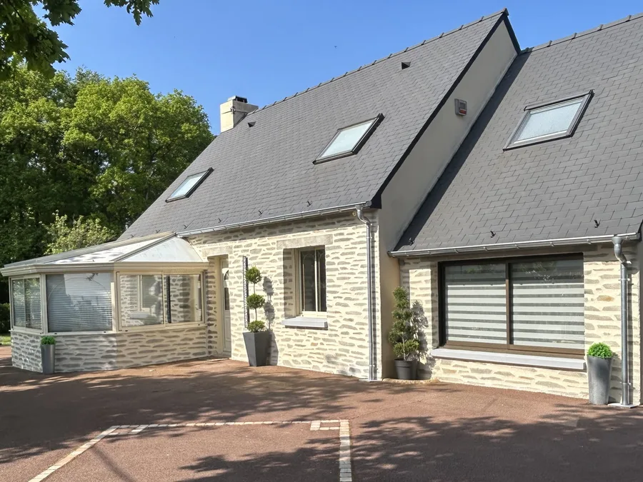
Cuéntenos su proyecto y reciba un presupuesto detallado en 24 h.
Mortero imitación piedra pigmentado en masa y tallado a mano, junta a junta. Elija el aparejo, el tono y el relieve: reproducimos la piedra de su zona o la que siempre quiso tener.


Bloques regulares y juntas finas. El acabado más elegante y señorial, ideal para chalets y viviendas de nueva construcción.
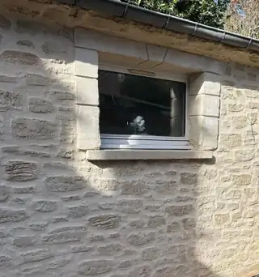
Piedras irregulares asentadas con junta ancha. El aspecto de las casas de pueblo y las construcciones tradicionales castellanas.
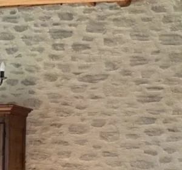
Piedra sobre piedra, casi sin junta visible. El encanto de los muros antiguos de montaña y de las casas rurales.
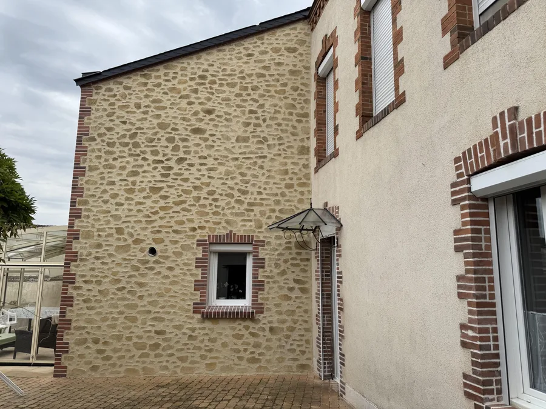
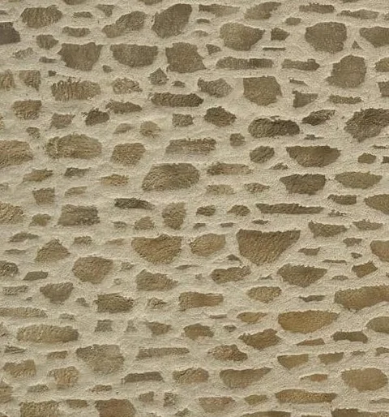
Relieve marcado y tonos tierra cálidos. Un acabado con mucho carácter, perfecto para casas de campo y zócalos.
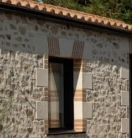
Esquinas, jambas y dinteles en ladrillo o piedra tallada para enmarcar puertas y ventanas con un toque cálido.
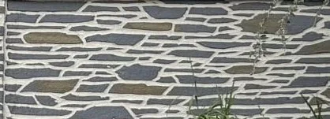
Piezas planas y alargadas en grises y ocres. Un acabado contemporáneo para muros de cerramiento, zócalos y jardines.
Un revestimiento imitación piedra bien ejecutado es indistinguible de la piedra natural a la vista, pero se aplica sobre el muro existente en pocos días.
Sin cantera, sin transporte de bloques ni refuerzos estructurales. El mismo resultado visual por una fracción del coste.
Se aplica directamente sobre su fachada actual, en obra nueva o rehabilitación. Sin demoliciones ni escombros.
Mortero formulado para el clima de la meseta: veranos intensos e inviernos con heladas. Sin mantenimiento especial.
Cada piedra se dibuja y talla en obra. Elija el aparejo, el color y el relieve: ninguna fachada se repite.
Una fachada de piedra aporta prestigio y diferenciación. Es una de las reformas exteriores con mayor impacto en el valor de venta.
«Cada junta se dibuja a mano. Por eso nadie distingue nuestra piedra de la de verdad.»
Jefe de obra · ArtePiedraEl mismo oficio viste su interior: una pared del salón, el frente de la chimenea, una bodega o una entrada adquieren el aire de la piedra antigua. En exterior, trabajamos fachadas completas, zócalos, muros de cerramiento y pilares de entrada.
Para grandes superficies, muros de cerramiento o presupuestos ajustados, aplicamos hormigón impreso vertical con moldes de piedra, ladrillo o madera. Le asesoramos sobre qué técnica conviene a cada muro.
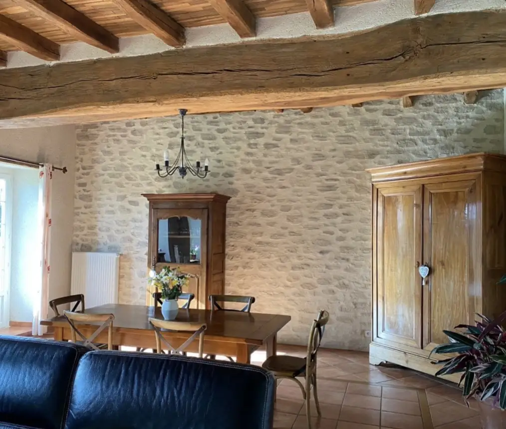
Desde el primer contacto hasta la garantía de 10 años, un único interlocutor y un equipo propio de oficiales.
Rellene el formulario con unas fotos de su fachada o llámenos. Le devolvemos la llamada el mismo día para entender su proyecto.
Respuesta en 24 hNos desplazamos gratis, medimos, revisamos el soporte y le mostramos muestras de acabados. Presupuesto detallado y sin sorpresas.
En 48 h tras la visitaNuestros oficiales tallan la piedra en obra. Entrega limpia, obra recogida y garantía de 10 años por escrito.
1 a 2 semanas por fachadaEquipo propio con base en Madrid. Nos desplazamos sin coste para valorar su obra en un radio de unos 120 km.
¿Su localidad no aparece? Consúltenos: estudiamos proyectos en toda Castilla-La Mancha y Castilla y León.
Parece piedra antigua de verdad. Los oficiales fueron muy cuidadosos con el tallado y el resultado ha superado lo que imaginábamos. Los vecinos no dejan de preguntar quién nos ha hecho la fachada.
Obra limpia, equipo puntual y presupuesto cerrado desde el primer día, sin extras. Nuestra casa de pueblo ha cambiado por completo. Recomendable sin dudarlo.
Presupuesto rápido y muy claro, con muestras para elegir el tono. Hicieron el zócalo y los recercados de las ventanas en dos semanas. Trato muy profesional de principio a fin.
¿No encuentra su pregunta? Llámenos o escríbanos: le respondemos sin compromiso.
Hacer una consultaEl precio depende de los metros cuadrados, del estado del soporte y del acabado elegido, pero siempre queda muy por debajo del coste de la piedra natural. Lo más rápido: envíenos unas fotos por el formulario y recibirá un presupuesto detallado y gratuito en menos de 24 horas.
Sobre la mayoría de soportes, tanto en obra nueva como en rehabilitación: enfoscado existente, monocapa, ladrillo, bloque de hormigón, hormigón o mortero. En exterior y en interior. Revisamos el estado del muro durante la visita técnica.
Para la fachada de una vivienda unifamiliar, normalmente entre una y dos semanas según la superficie y los detalles (recercados, esquinas, zócalos). Le indicamos el plazo exacto en el presupuesto y lo cumplimos.
Sí. El mortero está formulado para resistir heladas, lluvia, sol intenso y cambios bruscos de temperatura sin mantenimiento especial. Al estar pigmentado en masa, el color no se descascarilla como una pintura. Todos nuestros trabajos cuentan con garantía de 10 años.
El hormigón impreso vertical se moldea con planchas que estampan un patrón que se repite. El mortero imitación piedra se talla a mano, pieza a pieza, con un resultado único y más natural. Realizamos ambas técnicas y le aconsejamos la más adecuada según el muro, el estilo de la casa y el presupuesto.
En la mayoría de municipios basta con una declaración responsable o licencia de obra menor para revestir una fachada. Si la vivienda está en una comunidad de propietarios o en un casco histórico, conviene consultarlo antes. Le orientamos con la documentación.
En toda la Comunidad de Madrid y en las provincias de Toledo, Guadalajara, Segovia y Ávila. El desplazamiento para medir y valorar la obra es gratuito.
Con unos datos y, si puede, un par de fotos de la fachada, le llamamos en menos de 24 h para afinar el proyecto y concertar la visita técnica gratuita.
¿Prefiere hablarlo directamente?
600 123 456Lunes a viernes de 8:00 a 19:00 · sábados de 9:00 a 14:00
Un minuto es suficiente. Le respondemos en menos de 24 horas laborables.
Gracias por confiar en ArtePiedra. Le llamaremos en menos de 24 horas laborables para hablar de su proyecto.